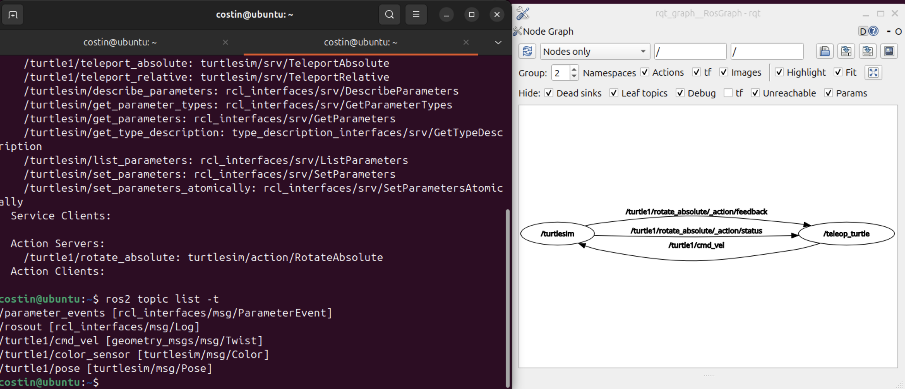
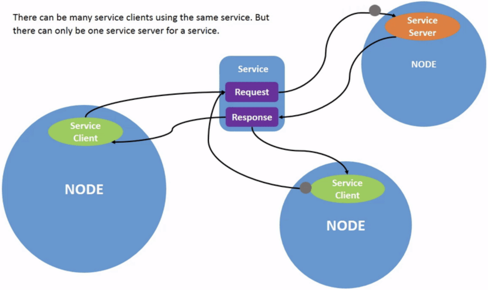
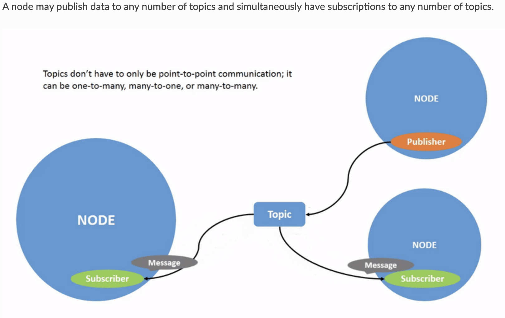
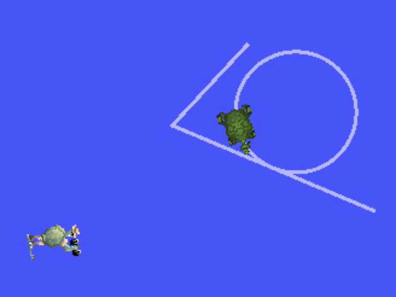

Advanced Software Development for Robotics is a mandatory course I have to take while in Q3 at Twente. I like it, since the main environment we are going to use is ROS2 with C++, which I wanted to delve in for a loong time. So here it goes.
Topics Basic Commands
ros2 topic list -t
- It gives a list of the existent topics and their topic type appended in brackets.

ros2 topic echo <topic_name>
- To see the data being published on a topic. Example for
$ ros2 topic echo /turtle1/cmd_vel
linear:
x: 2.0y: 0.0z: 0.0
angular:
x: 0.0y: 0.0z: 0.0
ros2 topic info <topic_name>
- I can see the type, the number of publishers, and number of subscribers.
$ ros2 topic info /turtle1/cmd_vel gives:
Type: geometry_msgs/msg/Twist
Publisher count: 1
Subscription count: 1
Nodes send data over topics using messages. Publishers and subscribers must send and receive the same type of message to communicate.
ros2 interface show <topic_name>
I saw earlier in the topic list that the cmd_vel topic has the type geometry_msgs/msg/Twist. So, if I want to see exactly the fields and their type, I can do $ ros2 interface show geometry_msgs/msg/Twist which will give me also a description:
# This expresses velocity in free space broken into its linear and angular parts.
Vector3 linear
float64 x
float64 y
float64 z
Vector3 angular
float64 x
float64 y
float64 z
ros2 topic pub <topic_name> <msg_type> ‘<args>’
The '<args>' argument is the actual data you’ll pass to the topic, in the structure you just discovered in the previous section.
Example: $ ros2 topic pub /turtle1/cmd_vel geometry_msgs/msg/Twist "{linear: {x: 2.0}, angular: {z: 1.8}}". My turtle now does circles like a dog chasing its tail.
I can also use <TAB> to autocomplete it, I don’t need to remember the YAML structure. To publish your command just once add the --once option.
ros2 topic find <topic_type>
This is useful if I need to list a list of available topics of a given type.
$ ros2 topic find geometry_msgs/msg/Twistst
/turtle1/cmd_vel
Services
To call a service:
ros2 service call <service_name> <service_type> <arguments>
Services are another method of communication for nodes in the ROS graph. Services are based on a call-and-response model versus the publisher-subscriber model of topics. While topics allow nodes to subscribe to data streams and get continual updates, services only provide data when they are specifically called by a client.


ros2 service list
Running the ros2 service list command in a new terminal will return a list of all the services currently active in the system:
$ ros2 service list
/clear
/kill
/reset
/spawn
/teleop_turtle/describe_parameters
/teleop_turtle/get_parameter_types
/teleop_turtle/get_parameters
/teleop_turtle/list_parameters
/teleop_turtle/set_parameters
/teleop_turtle/set_parameters_atomically
/turtle1/set_pen
/turtle1/teleport_absolute
/turtle1/teleport_relative
/turtlesim/describe_parameters
/turtlesim/get_parameter_types
/turtlesim/get_parameters
/turtlesim/list_parameters
/turtlesim/set_parameters
/turtlesim/set_parameters_atomically
ros2 service info <service_name>
For example, you can find the count of clients and servers for the /clear service:
$ ros2 service info /clear
Type: std_srvs/srv/Empty
Clients count: 0
Services count: 1
ros2 interface show <type_name>
Let’s introspect a service with a type that sends and receives data, like /spawn. From the results of ros2 service list -t, we know /spawn’s type is turtlesim/srv/Spawn.
To see the request and response arguments of the /spawn service, run the command:
$ ros2 interface show turtlesim/srv/Spawn
float32 x
float32 y
float32 theta
string name # Optional. A unique name will be created and returned if this is empty
---
string name
Now let’s spawn a new turtle by calling /spawn and setting arguments. Input <arguments> in a service call from the command-line need to be in YAML syntax:
$ ros2 service call /spawn turtlesim/srv/Spawn "{x: 2, y: 2, theta: 0.2, name: ''}"
requester: making request: turtlesim.srv.Spawn_Request(x=2.0, y=2.0, theta=0.2, name='')
response:
turtlesim.srv.Spawn_Response(name='turtle2')
Now I have 2 turtles.

You generally don’t want to use a service for continuous calls; topics or even actions would be better suited.
ROS2 Parameters
A parameter is a configuration value of a node. You can think of parameters as node settings. A node can store parameters as integers, floats, booleans, strings, and lists. In ROS 2, each node maintains its own parameters.
ros2 param list
Here I can see for example that the turtlesim has background RGB parameters which i can change with the next command. All nodes use use_sim_time.
ros2 param get <node_name> <parameter_name>
With this I can, for instance, get the RGB values from turtlesim.
ros2 param set <node_name> <parameter_name> <value>
I guess it goes without saying what this one does. The set command only changes parameters in the current session, not permanently.
ros2 param dump /turtlesim > turtlesim.yaml
This might be useful if I want to dump the parameters of a node to a .yaml file.
ros2 param load <node_name> <parameter_file>
Consequently, I can also load them.
To start the same node using your saved parameter values, use:
ros2 run <package_name> <executable_name> —ros-args —params-file <file_name>
Rosbags
The command for viewing rosbags stays rqt_bag.
rqt_bag
ros2 bag info <bag_file_name>
Related: ROS2 Client libraries, ROS2 - Writing Publishers and Subscribers.